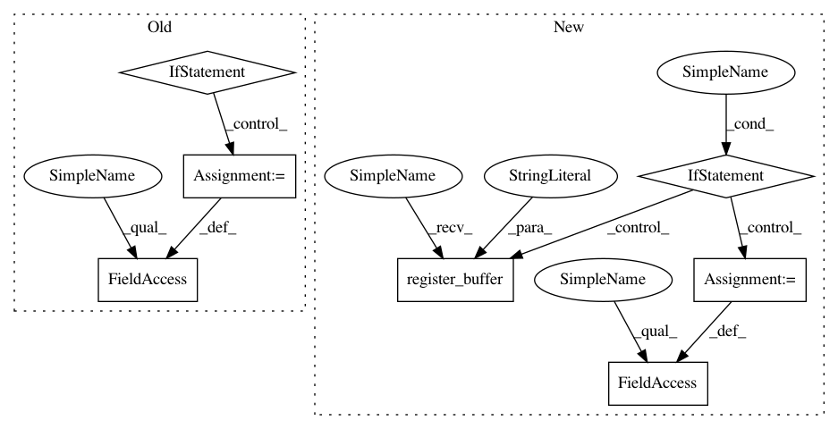

1fd1fbb4b677f10d8e2181e7176daabad7327a72,python/baseline/pytorch/tagger/model.py,TaggerModelBase,create,#Any#Any#Any#,62
Before Change
pytorch_linear(hsz, len(model.labels)),
))
if model.use_crf:
if model.crf_mask:
assert model.span_type is not None, "A crf mask cannot be used without providing `span_type`"
model.crf = CRF(
len(labels),
(Offsets.GO, Offsets.EOS), batch_first=False,
vocab=model.labels, span_type=model.span_type, pad_idx=Offsets.PAD
)
else:
model.crf = CRF(len(labels), (Offsets.GO, Offsets.EOS), batch_first=False)
model.crit = SequenceCriterion(LossFn=nn.CrossEntropyLoss)
print(model)
return model
After Change
mask=constraint
)
else:
if constraint is not None:
constraint = F.log_softmax(torch.zeros(constraint.shape).masked_fill(constraint, -1e4), dim=0)
model.register_buffer("constraint", constraint.unsqueeze(0))
else:
model.constraint = None
model.crit = SequenceCriterion(LossFn=nn.CrossEntropyLoss)
print(model)
return model
In pattern: SUPERPATTERN
Frequency: 3
Non-data size: 7
Instances
Project Name: dpressel/mead-baseline
Commit Name: 1fd1fbb4b677f10d8e2181e7176daabad7327a72
Time: 2018-11-19
Author: blester125@users.noreply.github.com
File Name: python/baseline/pytorch/tagger/model.py
Class Name: TaggerModelBase
Method Name: create
Project Name: dmlc/dgl
Commit Name: 650f6ee1e0b3c2888a2c6d7db9c3d159cae5a583
Time: 2019-08-27
Author: expye@outlook.com
File Name: examples/pytorch/appnp/appnp.py
Class Name: GraphPropagation
Method Name: __init__
Project Name: dmlc/dgl
Commit Name: 69f5869f3b6d190ed99e156a932634393ab361dd
Time: 2020-08-12
Author: xiaotj1990327@gmail.com
File Name: python/dgl/nn/pytorch/conv/edgeconv.py
Class Name: EdgeConv
Method Name: __init__